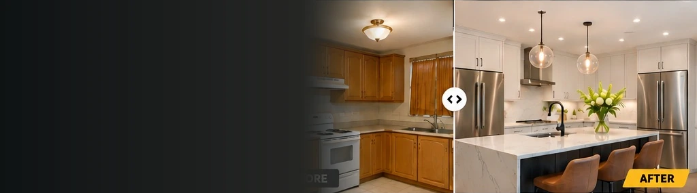

Kitchen Transformation
From a dated kitchen to a modern, functional space.
- Custom cabinetry
- Quartz countertops
- Lighting & flooring

Our Projects
See how we transform outdated spaces into beautiful, functional homes.
From a dated kitchen to a modern, functional space.
A tired bathroom reimagined into a spa-like retreat.
Turning unused space into comfortable, livable space.
Creating a brighter, more connected living space.
A complete home transformation, inside and out.
Enhancing outdoor living with a modern, durable design.
A modern, stylish upgrade that adds value and appeal.
From an empty unit to a fully operational restaurant.
Your Home Reimagined
Sample feedback shown in the Craftwell design mockup.
View Testimonials“Craftwell transformed our kitchen beautifully. Professional, on time and great quality.”Mark D.
“They opened up our main floor and created the perfect open-concept living space. Highly recommend!”Lisa R.
“Excellent work and attention to detail. Our bathroom feels like a spa now!”James P.
“From design to completion, the process was smooth and stress-free.”Sandra M.
“Our basement renovation turned an unused space into a beautiful family area. Amazing result!”David K.
“Professional, reliable and transparent. We’re very happy with our whole-home renovation.”Karen T.
“Great team and excellent craftsmanship. They delivered exactly what we envisioned and on schedule.”Andre W.